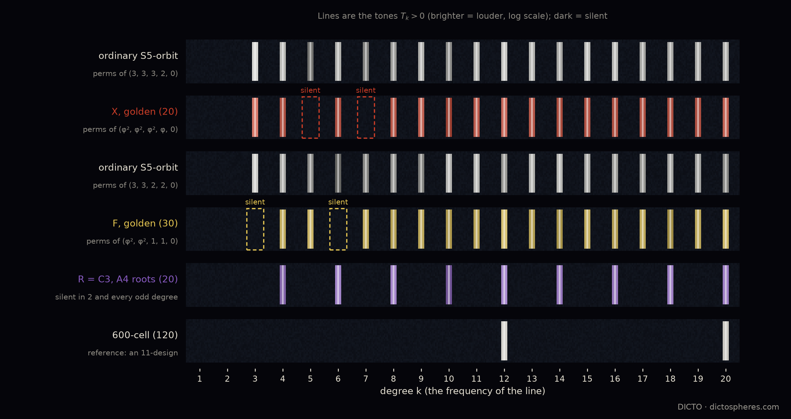
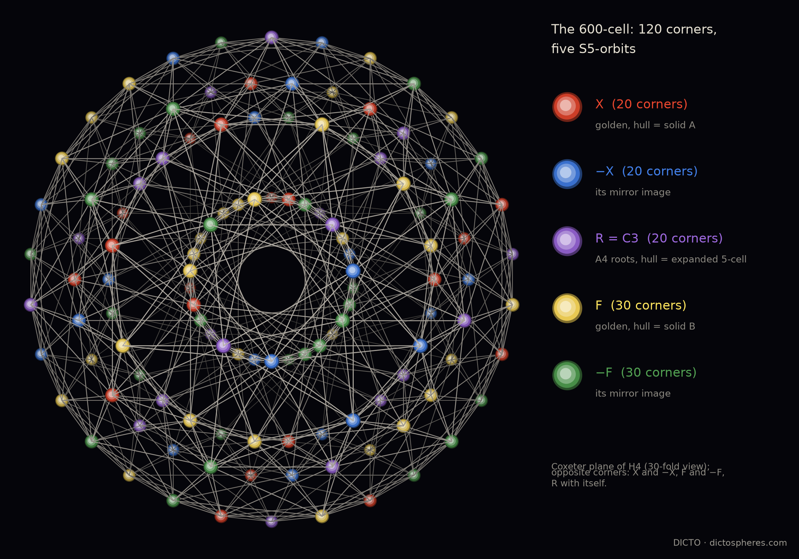
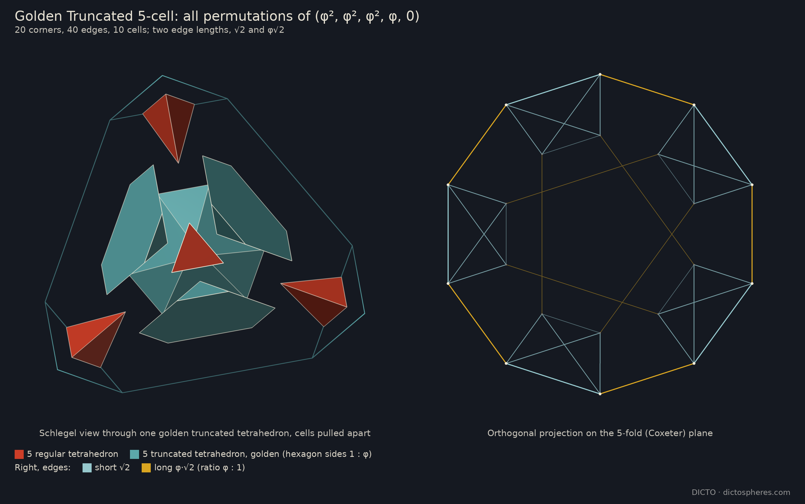
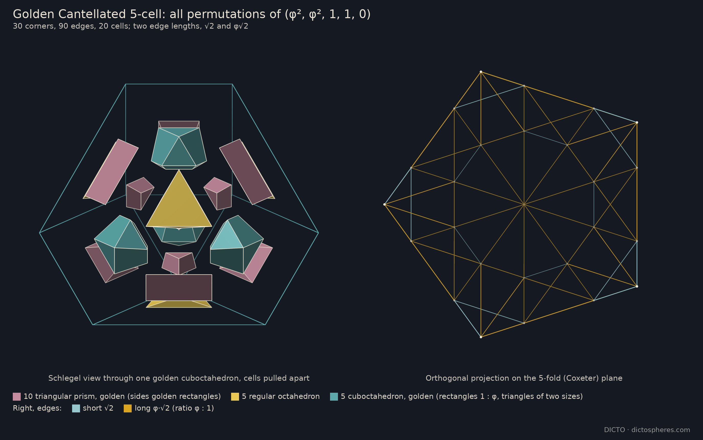
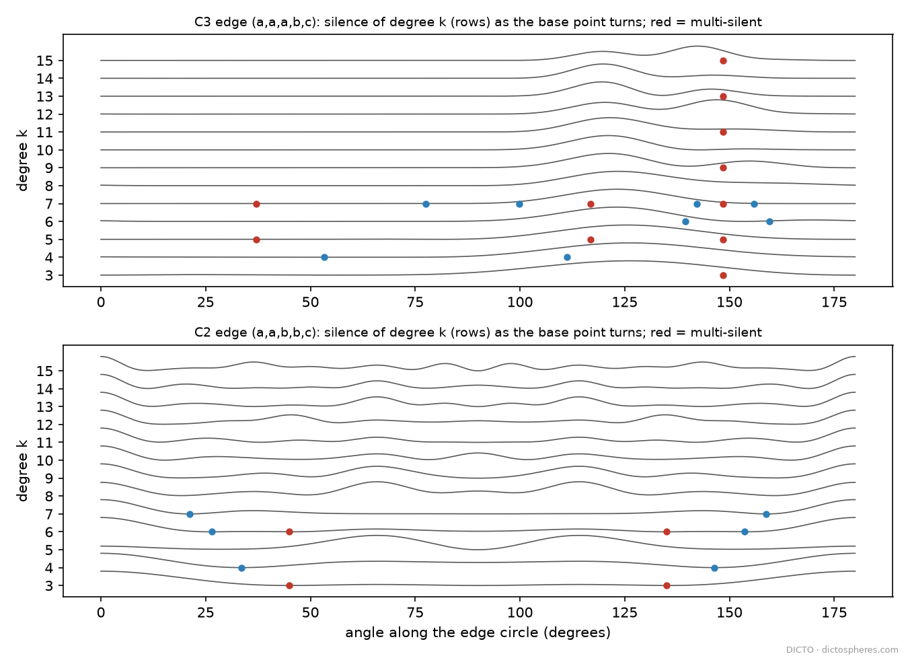

Listening for hidden symmetries that silence specific harmonics of point sets in the 600-cell
Abstract. A finite set of points on a sphere is silent in degree k when every harmonic polynomial of degree k sums to zero over it. Symmetry forces some silences: a set with the symmetry of a group G is silent in every degree in which G has no invariant harmonic. We show that a second, hidden kind of symmetry forces more. Read the 120 corners of the 600-cell as the binary icosahedral group 2I of unit quaternions. The symmetry group S5 of the 5-cell splits them into five orbits of 20, 20, 20, 30 and 30 corners (Koca et al. [32, 4]). Each orbit is a twisted conjugacy class {a·x·σ(a)−1}, where σ is the outer automorphism of 2I: the Galois conjugation √5 ↦ −√5 followed by a rotation. Main theorem: the 20 permutations of (φ², φ², φ², φ, 0) are silent in exactly the degrees 1, 2, 5 and 7, and the 30 permutations of (φ², φ², 1, 1, 0) in exactly 1, 2, 3 and 6, in all degrees. Their symmetry is S5 and nothing more, and S5 forces only degrees 1 and 2: ordinary symmetry does not explain degrees 5 and 7, or 3 and 6. Those silences are forced by twisted characters (Theorem 1, a silence criterion for twisted classes of a finite group, which is Frobenius's central-character formula applied to the group extended by the twist). Three accounts of the mechanism (twisted characters of 2I, Schur's spin characters of a double cover of S5 with an integrality argument, and Brauer's defect zero) are complementary explanations of one piece of representation theory, not three independent proofs (Proposition 3). Galois conjugation, which DICTO calls Double Vision, builds the twist; as a map of the set it forces only that every tone is rational. A census of 3232 point sets in five H4 and E8 polytopes, exhaustive over its listed subgroup-orbit and union families rather than over all point subsets, leaves three open families. A classification shows where genuine twists exist (I2(n) for n = 5, 7, 9, 10, 11 and n ≥ 13, H3 and H4 through Galois conjugation, and Sym6 through its exceptional automorphism, which adds no silence). On the two edge circles of a dial the double silences are isolated points (exact), and a certified search found no others. The forced silences are a group-theoretic analogue of the systematic absences of a nonsymmorphic space group; this is an analogy, not a diffraction result, and a quasicrystal decorated with the silent sets shows no extinct Bragg peaks.
A U-boat sits on the sea bed and waits out the hunt. Overhead the enemy's ships listen with sonar and drop depth charges wherever they hear it. No boat can be silent at every frequency. The sonar operator listens past the hiss of the sea for tonals: sharp lines at the particular frequencies of a boat's pumps, motors and shafts, which stand out and carry far [31]. A boat running silent shows none of the lines the operator is listening for, while the rest of its sound goes on, and to the listener above it passes as one more shape on the sea bed. The image is DICTO's, and it describes the point sets of this paper.
A set of points on a sphere has a tone in every degree k, the size of its degree-k harmonic content. A generic orbit of a symmetry group rings in every degree the group allows. The golden sets of this paper have no more symmetry than their neighbours, so a listener who knows their symmetry expects them to ring in degrees 5 and 7, or 3 and 6. They are silent there (Figure 1). The degrees are the frequencies, the tones are the lines, and the listener is anyone who knows the set's symmetry. As with the boat, no finite set is silent in every degree, and the rest of its tones go on. Unlike the boat, the sets do not choose their silence: the twist forces it. Their disguise is a twist: each is a twisted conjugacy class of the binary icosahedral group, a set that looks like an orbit of the 5-cell's symmetry group but is built from the group itself by a map that turns √5 into −√5. That map is DICTO's Double Vision [1], the move that places a golden shape and its Galois twin in one space. Here it does not silence anything on its own; it builds the twist, and the twist silences.
Two kinds of symmetry are at work. The ordinary symmetry of X and F is the group S5 of the 5-cell, which permutes the five coordinates. It forces their silence in degrees 1 and 2, because S5 has no invariant harmonic there; but it has an invariant harmonic in every degree from 3 on, so it cannot explain degrees 5 and 7 of X, or 3 and 6 of F. Those come from a twisted symmetry: the 600-cell's own group 2I acting on itself by x ↦ a·x·σ(a)−1, where σ is not an inner automorphism. This paper is about that second kind.

Tones. For a finite set S on the unit sphere of ℝn and a degree k ≥ 1, the tone is Tk(S) = |S|−2 Σx,y∈S Gk(⟨x, y⟩)/Gk(1), with Gk the Gegenbauer polynomial of the sphere (the Chebyshev polynomial of the second kind Uk on S³ ⊂ ℝ⁴). Tk(S) ≥ 0, and Tk(S) = 0 exactly when every harmonic polynomial of degree k sums to zero over S (Delsarte, Goethals and Seidel [6]). We then say S is silent in degree k, or kills k. The silence signature of S is the set of k it kills. A t-design kills 1, …, t; a set killing a chosen list T of degrees is a spherical T-design (Miezaki [38]), or a design of harmonic index T in the sense of Bannai, Okuda and Tagami [8] and Zhu et al. [9], who note that Delsarte and Seidel's designs admitting indices [37] are essentially the same notion. The silence signature is what Misawa and Nishimura call the harmonic strength Hst(S) [39].
Forced silence. If G is a finite group of isometries fixing S, then S kills every degree in which G has no invariant harmonic (counted by Molien's series [26]; for orbits this is the method of Goethals and Seidel [7]). An orbit G·v kills degree k exactly when every G-invariant harmonic of degree k vanishes at v (Sobolev's theorem [33], stated for any finite group as in Nozaki and Sawa [35, Theorem 2.1]; [7]). A silence is unforced when the full symmetry group of S has an invariant harmonic in that degree.
The 600-cell as a group. The 120 unit icosians, the unit quaternions ½(±2, 0, 0, 0), ½(±1, ±1, ±1, ±1) and ½(0, ±1, ±φ−1, ±φ) with even permutations, form the binary icosahedral group 2I and are the corners of the 600-cell [14, 15, 16]. φ = (1 + √5)/2. On S³ = SU(2), harmonic degree k corresponds to the representation Vk = Symk(ℂ²) of dimension k + 1: the degree-k harmonics are the matrix coefficients of Vk, and Uk(Re g) is its character (Peter–Weyl). 2I has nine irreducible representations, of dimensions 1, 2, 2′, 3, 3′, 4, 4s, 5 and 6 (4s and 6 faithful); their pattern inside Vk is McKay's [13].
Twisted classes. Let G be a group and σ an automorphism of G. The twisted class of x0 ∈ G is O = {a x0 σ(a)−1 : a ∈ G}. For σ the identity it is an ordinary conjugacy class. An irreducible representation π of G is σ-stable when π∘σ ≅ π; then some Jπ, unique up to a scalar, satisfies π(g) Jπ = Jπ π(σ(g)), and the twisted character is χ̃π(x) = tr(π(x) Jπ−1). When σ is an involution we scale Jπ so that Jπ² = 1; a zero of χ̃π does not depend on the scaling.
Labels. Exact: proved, or computed in exact rational or Q(√5) arithmetic. Certified: located numerically and certified by a Krawczyk interval test [24]. Numerical: floating point. Quoted: a known result used from the literature and credited; where it was not re-read for this paper, the reference says so.
Reproduction. Every exact claim has a script and a log in the folders of the meta line. The central computations (the twisted classes, Tables 1 and 2, the Main theorem to degree 60, Theorem 1's criterion on every class of 2T, 2O and 2I, Propositions 3, 5 and 7, the Sym6 case of Proposition 6 and the edge circles of §7) were redone by a second implementation written separately from the study scripts (second-implementation/, exact arithmetic, its own report). The census was re-derived by a third program, also written separately (studies/2026-11-17-independent-checks/109-census): it recomputed the zero lists of all 808, 144, 257 and 541 sets of the 600-cell, 24-cell, snub 24-cell and E8 universes, and they agree; the 1482 sets of the 120-cell agree by size, zeros and stabiliser order (set by set was not possible from the stored data); its own orbit catalogue agrees with the census in both directions; and it confirms every zero of Table 3a. The count 3232 belongs to the census's union rule (§6) and was not reproduced independently. The census is therefore partly reproduced. All three programs were written with an AI assistant; the proofs have not had specialist review, so the results are reproducible, not independently refereed.
Main theorem (the golden silences). Exact. Under the coordinate permutations S5, the 600-cell splits into five orbits (Figure 2): R, the 20 roots of A4 (antipodal); X and −X, the 20 permutations of (φ², φ², φ², φ, 0) and their negatives; F and −F, the 30 permutations of (φ², φ², 1, 1, 0) and their negatives (coordinates in ℝ⁵ with the centre subtracted, one radius). In every degree k ≥ 1:
(i) X and −X are silent exactly in the degrees 1, 2, 5 and 7;
(ii) F and −F are silent exactly in the degrees 1, 2, 3 and 6;
(iii) R is silent exactly in degree 2 and every odd degree.
The full symmetry group of X, and of F, is S5 of order 120. S5 forces only degrees 1 and 2. Degrees 5 and 7 of X, and 3 and 6 of F, are forced by the twisted characters of 2I (Theorem 2), not by any isometry.

Theorem 1 (twisted silence). Exact, general. Let G be a finite group, σ an automorphism of G, x0 ∈ G and O its twisted class. Let Π be a finite-dimensional complex representation of G (for instance the restriction to G of a representation of a compact group H ⊃ G). Then Σx∈O Π(x) = 0 if and only if χ̃π(x0) = 0 for every σ-stable irreducible constituent π of Π. Constituents that are not σ-stable never contribute. A union of twisted classes O1, …, Om has Σ Π(x) = 0 if and only if Σi |Oi| χ̃π(Oi) = 0 for every σ-stable π. On S³ = SU(2) with Π = Vk, this is silence in degree k.
Theorem 2 (the 600-cell). Exact. The S5-orbits of the 600-cell are the five twisted classes of 2I under its outer automorphism σ(w, x, y, z) = (w̄, −x̄, z̄, ȳ), where the bar is the Galois conjugation √5 ↦ −√5. The σ-stable irreducibles are 1, 4, 5, 4s and 6; the pairs (2, 2′) and (3, 3′) are exchanged by σ. Their twisted characters on the five classes are those of Table 1, and the Main theorem follows from Theorem 1 and the restriction of Vk to 2I (Table 2).
Proposition 3 (one mechanism, three views). Exact for (a), (b) and the integrality step; Schur's rule and Brauer's theorem quoted. The three views below are complementary explanations of one mechanism, not three independent proofs of the Main theorem. Let G+ = 2I ⋊ ⟨σ⟩, a group of order 240 with centre {±1} and G+/{±1} ≅ S5, a double cover of S5.
(a) The twisted class of x0 is the G+-class of x0σ in the outer coset, and χ̃π(x0) is, up to a fixed sign, the character of the extension of π to G+ at x0σ. So the twisted character table of 2I is the table of G+ on its odd coset, and the faithful rows 4s and 6 are the spin characters ⟨3, 2⟩ and ⟨4, 1⟩ of the double cover.
(b) Integrality alone forces one zero in each spin row: with u = |χ̃6(X)|² and v = |χ̃6(F)|², 2u + 3v = 6 in whole numbers, so (u, v) = (0, 2) or (3, 0). Exactly one of the two golden pairs is therefore silent in degrees 5 and 7.
(c) Which pair is fixed either by one cubic identity, p3(F) = 0, or by Schur's odd-class rule [2]: a spin character ⟨λ⟩ is nonzero on odd elements only on cycle type λ.
(d) For X there is a third reading: 6 is of 3-defect zero in G+ (240 = 2⁴·3·5 and 3 | 6), so by Brauer's theorem [3] its character vanishes on every element of order divisible by 3; X lies over the S5 class of cycle type (3, 2), of order 6. F's zero (4s on 4-cycles) has no such reading and rests on (b), (c).
Double Vision enters only through σ: it is the Galois part of the twist that builds G+ from 2I. As a map of the 600-cell (Φ = φ²·Galois) it fixes all five orbits and forces only that every tone is rational.
How the three views divide the work. The proof of the Main theorem needs only Theorem 1, Table 2 and the zeros of Table 1, which are computed exactly (Theorem 2). Proposition 3 explains those zeros. View 1, the twisted characters of 2I, is that computation and covers every zero. View 2, Schur's spin characters of the double cover G+, shows by integrality alone that one of the two golden pairs must be silent in the spin degrees (b); the cubic identity p3(F) = 0, or Schur's odd-class rule, decides which (c). View 3, Brauer's defect zero, explains only X's zero in degrees 5 and 7 (d), and says nothing about F. All three describe one group of order 240.
Theorem 4 (degree linkage on the 600-cell). Exact (proved below; the rational kernels were also computed for k ≤ 20). For a real weighting w of the 600-cell put Tk(w) = Σx,y wxwy Uk(⟨x, y⟩)/(k + 1), which vanishes exactly when the degree-k harmonic part of w does (for a subset, w its indicator, this is |S|² Tk(S)). For every real weighting, T7 = 0 implies T5 = 0, and T9 = 0 holds exactly when T15 = 0; for every rational weighting (in particular every subset), T7 = 0 also implies T1 = 0. So the golden double silence is one rational condition, not two. The first implication has a reason in Table 2: V7 = 2′ + 6 and V5 = 6, and Galois conjugation exchanges the 2′-part and the 2-part of a rational set, so a rational set with no 2′-part has no 2-part (T1 = 0).
Proposition 5 (the Double-Vision class pair). Exact, with the 2I character values quoted. Let C be a conjugacy class of 2I of elements of order 5 or 10 (12 points) and σC its Galois image. The 24-point set C ∪ (−σC) is silent exactly in degrees 3, 4, 5, 9 and 15, in every degree k ≥ 1. Odd degrees see only the faithful constituents, whose characters on −σC are −σ(χ(C)), so the block sums are χ(C) − σχ(C): they vanish exactly when every constituent of Vk is rational on C (4s and 6 are; 2, 2′, 3, 3′ are not). In even degrees only the 5, with character 0 on C, vanishes. By contrast C ∪ −C kills every odd degree and 4, and C ∪ σC kills only 4.
Proposition 6 (where a genuine twist exists). Exact for (a), (b), the dihedral reduction, the A5 case and the irreducibility counts; the list of automorphisms of finite Coxeter groups is quoted [17, 18]. Let ρ be the defining representation of a finite group G ⊂ O(n). (a) If ρ∘σ ≅ ρ, every twisted class is an ordinary conjugation orbit moved by an isometry. (b) If ρ∘σ ≅ ρ ⊗ λ for a one-dimensional character λ ≠ 1, every twisted class lies in two parallel hyperplanes (a latitude pair). (c) Otherwise, for the reflection representation of a finite irreducible Coxeter group and for the finite subgroups of SU(2), the twist either comes from Galois conjugation, which exists only for I2(n) (n = 5, 7, 9, 10, 11 or n ≥ 13), H3 and H4, or is the exceptional outer automorphism ξ of W(A5) = Sym6, whose five twisted classes on S²⁴ kill only degree 1 for k ≤ 40, as the twist group forces. On S³, 2T and 2O fall under (a) and (b) (Σχ²/|G| = 2); binary dihedral classes lie on great circles; and 2I is the only case whose twisted action on its own sphere is irreducible (Σχ²/|G| = 1).
Proposition 7 (moment rigidity). Exact. If a set S on the unit sphere S³ is silent in degrees 1, 5 and 7, then for every unit vector u the odd moments pk(u) = Σx∈S ⟨x, u⟩k satisfy p5(u) = p3(u) and p7(u) = (7/8)·p3(u). In particular this holds for X scaled to unit radius.
In words: pk(u) measures how the set leans towards the direction u, weighted more and more towards the points nearest u as k grows. Silence in degrees 1, 5 and 7 removes every odd part of the set's shape except the degree-3 part, so along every direction the odd moments of orders 3, 5 and 7 are fixed multiples of one function: the set's odd lean has the same pattern at every order, the pattern of a single cubic.
Proof of Theorem 1. Put S = Σx∈O Π(x). Every point of O is reached |Stab| times as a runs over G, so |Stab|·S = Σa∈G Π(a) Π(x0) Π(σ(a))−1. All three factors preserve the G-isotypic blocks of Π (x0 and σ(a) lie in G), and on a block π ⊗ ℂm they act as π(·) ⊗ 1, so it is enough to treat one copy of π. On a block of type π the sum Sπ = Σa π(a) π(x0) π(σ(a))−1 satisfies π(g) Sπ = Sπ π(σ(g)), so it intertwines π∘σ with π. By Schur's lemma Sπ = 0 unless π is σ-stable, and Sπ = c·Jπ if it is. Taking the trace of Sπ Jπ−1 and using π(σ(a))−1 Jπ−1 = Jπ−1 π(a)−1 gives c = |G| χ̃π(x0)/dim π. So the block of S is |O| χ̃π(x0) Jπ/dim π, which vanishes exactly when χ̃π(x0) = 0 (Jπ is invertible), and the union statement follows by adding blocks. On S³ the degree-k harmonics are exactly the functions x ↦ tr(M Vk(x)) (both spaces have dimension (k + 1)²), so Σx∈O tr(M Vk(x)) = tr(M S) vanishes for every M exactly when S = 0: S = 0 is silence in degree k. ∎ A step-by-step audit of this proof, with its assumptions (complex coefficients, Jπ unique up to a scalar by Schur's lemma because π is irreducible, finiteness of G for the sum), is in second-implementation/THEOREM1-AUDIT.md; it found no gap.
The step that twisted class functions are spanned by twisted characters is Fel'shtyn and Troitsky's Lemma 5.1 [5], with their Theorem 4.3 (the number of twisted classes equals the number of σ-stable irreducibles; for finite groups they refer to Fel'shtyn and Hill [36]). Theorem 1 is classical in substance: by Proposition 3 (a), Σx∈O Π(x) is the image of a class sum of G ⋊ ⟨σ⟩ in its coset Gσ, and a class sum acts on an irreducible representation by the scalar |C|χ(g)/χ(1) (Frobenius's central character); characters on the coset Gσ are the subject of Shintani descent. For σ the identity it is the statement that a conjugacy class kills Π exactly when every constituent has character zero on it. What is new here is its reading as silence of harmonic sums and its use for design zeros that symmetry does not force.
Proof of Theorem 2. The rotations of the 600-cell are x ↦ a x b−1 with a, b ∈ 2I [16]. The A5 inside S5 acts irreducibly on the 4-space, so its preimage in 2I × 2I is a copy of 2I that projects isomorphically onto both factors (2I has no subgroup isomorphic to A5), that is {(a, σ(a))} for an automorphism σ of 2I, and σ is not inner (an inner σ would fix an axis). This Galois form of W(A4) is in Koca, Koç, Al-Barwani and Al-Farsi [32, eq. (31)]: quaternion pairs [p, ∓a p′ a] built from p ∈ 2I and its Galois conjugate p′ (√5 ↦ −√5), with a = (e2 − e3)/√2, together with the split of the 600-cell into 20, 20, 20, 30 and 30. They do not treat the orbits as twisted conjugacy classes or consider harmonic sums. Checked exactly: the map σ(w, x, y, z) = (w̄, −x̄, z̄, ȳ) is an automorphism of 2I (it is an involution), its twisted classes have sizes 20, 20, 20, 30, 30, and X and F are congruent to two of them (exact Gram isomorphism). The 4-space is 2 ⊗ 2′, the product of the two Galois-conjugate 2-dimensional representations, so σ exchanges 2 with 2′ and 3 with 3′; these four never contribute (Theorem 1). There are five twisted classes and five σ-stable irreducibles (1, 4, 5, 4s, 6), as Fel'shtyn–Troitsky's count requires. Table 2 is computed exactly. Table 1 is computed exactly from the class sums: with Jπ² = 1, χ̃π(O)² = dim π · Σx,y∈O χπ(xy)/|O|². The nonzero spin values are imaginary, ±i√3 and ±i√2: x0σ has order 6 on X, so a character value there lies in ℚ(√−3), which does not contain √3. Their moduli, and the zeros, also follow as below without quoting any table.
Zero pattern from one identity. Faithful twisted characters change sign under x ↦ −x, so they vanish on the antipodal class R and take values (a, −a, b, −b) on (X, −X, F, −F) for 4s and (c, −c, d, −d) for 6. Orthogonality over the 120 elements of the outer coset gives 40|a|² + 60|b|² = 120, 40|c|² + 60|d|² = 120 and 40ac̄ + 60bd̄ = 0. The S5-invariant cubic harmonic is the centred power sum p3, and p3 vanishes at (φ², φ², 1, 1, 0) (exact), so F kills degree 3 (Sobolev's criterion). Since V3 = 4s, b = 0; then |a|² = 3, so c = 0 and |d|² = 2. Hence 6 vanishes on X: X kills 5 (V5 = 6) and 7 (V7 = 2′ + 6). The two golden sets explain each other.
Complete lists. X kills odd k exactly when 4s is absent from Vk, which happens for k = 1, 5, 7, and even k exactly when none of 1, 4, 5 occurs, which happens for k = 2 only. F kills odd k exactly when 6 is absent (k = 1, 3), and even k exactly when neither 1 nor 5 occurs (k = 2, 6); the 4 vanishes on 4-cycles because the standard character of S5 is (fixed points − 1) = 0 there. Why a finite table settles every degree: there is a polynomial of degree 12, Klein's invariant form [14], that every element of 2I leaves fixed. Multiplying by it embeds Vk in Vk+12 as 2I-representations, so a constituent present in degree k is present again in degree k + 12, and in every later degree of the same residue mod 12. X rings in an odd degree as soon as 4s is present, and 4s is present at k = 3, 9, 11, 13, 17 and 19, one degree in each odd residue class mod 12; so every odd k ≥ 13 rings, and the odd silences are 1, 5 and 7. The same count for the even degrees (1, 4 or 5 present from k = 4 to 14) and for F (6 present at k = 5, 7, 9, 11, 13, 15; 1 or 5 present at k = 4, 8, 10, 12, 14, 18) leaves only the listed silences, and the table to k = 30 contains all of these witnesses. The predicted lists equal the direct exact sums for all five classes and every k ≤ 30. The full symmetry group of X is the automorphism group of its exact Gram matrix, of order 120, and the harmonic Molien series of S5 on the 4-space, 1/((1−t³)(1−t⁴)(1−t⁵)), has no invariant in degrees 1 and 2 and at least one in every degree k ≥ 3. ∎
| class (size) | S5 odd class | 1 | 4 | 5 | 4s = spin ⟨3,2⟩ | 6 = spin ⟨4,1⟩ | signature (all k) |
|---|---|---|---|---|---|---|---|
| R (20) | transpositions | 1 | 2 | 1 | 0 | 0 | 2, every odd k |
| X, −X (20 each) | type (3,2) | 1 | −1 | 1 | ±i√3 | 0 | 1, 2, 5, 7 |
| F, −F (30 each) | 4-cycles | 1 | 0 | −1 | 0 | ±i√2 | 1, 2, 3, 6 |
| V1 = 2 | V2 = 3 | V3 = 4s | V4 = 5 | V5 = 6 | V6 = 3′ + 4 |
| V7 = 2′ + 6 | V8 = 4 + 5 | V9 = 4s + 6 | V10 = 3 + 3′ + 5 | V11 = 2 + 4s + 6 | V12 = 1 + 3 + 4 + 5 |
Proof of Proposition 3. (a) In G+, a(x0σ)a−1 = a x0 σ(a)−1·σ, so twisted classes of 2I are the G+-classes in the coset 2I·σ. A σ-stable π extends to π̂ on G+ with π̂(σ) = Jπ−1 after scaling (σ is an involution, so Jπ² is a scalar, fixed to 1 up to sign), and then χπ̂(x0σ) = tr(π(x0) Jπ−1) = χ̃π(x0). The faithful extensions are spin characters of the double cover G+ of S5; by their degrees and their nonzero values (Table 1) they are ⟨3, 2⟩ (degree 4) and ⟨4, 1⟩ (degree 6). (b) Character values are algebraic integers. The restriction of 6 to 2I has a rational character, so every Galois conjugate of χ̃6 is ±χ̃6 and u, v are rational algebraic integers, hence whole numbers ≥ 0. Spin characters vanish on R (−1 acts as −1 and R = −R). Orthogonality on the outer coset gives 40u + 60v = 120. The only solutions are (0, 2) and (3, 0); the same holds for 4s with u′ = 3 − u, v′ = 2 − v. (c) is the identity argument above, or Schur's rule [2]. (d) An irreducible character of p-defect zero vanishes on all p-singular elements [3]; 3 is the full power of 3 in 240 and divides 6. The last sentence is checked exactly: Φ(x) = φ²·x̄ permutes the 600-cell, sends each cosine c to its conjugate, and fixes each of the five orbits setwise, so the tones are fixed by Galois conjugation and are rational; the controls in §6 confirm it forces no zero. ∎
Proof of Theorem 4. The kernel Nk = {rational weightings w : the degree-k harmonic part of w vanishes} was computed exactly for k ≤ 20 on the 600-cell (python-flint), and the inclusions N7 ⊂ N1 ∩ N5, N9 ⊂ N3 ∩ N5 ∩ N15, N15 ⊂ N3 ∩ N5 ∩ N9 hold exactly (also T6 ⇒ T2, T8 ⇒ T4, T10 ⇒ T2, T4). The proof: Tk = Σρ m(k, ρ) Fρ with Fρ(w) = Σx,y wxwy χρ(xy−1) ≥ 0 (checked exactly on every orbit for k ≤ 30), so Tk(w) = 0 exactly when Fρ(w) = 0 for every constituent ρ of Vk. V5 = 6 ⊂ V7 = 2′ + 6, and V9 = 4s + 6 and V15 = 4s + 2·6 have the same constituents, which gives the first two statements for every real w. For rational w, F2′(w) is the Galois conjugate of F2(w), so F2′(w) = 0 forces T1(w) = F2(w) = 0. ∎
Proof of Proposition 7. On S³ the function x ↦ Uj(⟨x, u⟩) is the reproducing kernel of the degree-j harmonics up to a constant, so a set silent in degree j has Σx∈S Uj(⟨x, u⟩) = 0 for every u. Expand tk in Chebyshev polynomials of the second kind: t³ = (U3 + 2U1)/8, and the U3-coefficients of t³, t⁵, t⁷ are 1/8, 1/8 and 7/64 (exact; scripts/moment_check.py). With degrees 1, 5, 7 silent, only the U3 terms survive in p3, p5, p7, and their ratios are 1 and 7/8. ∎ The check script also confirms the identities on X in 400 random directions (largest deviation 1.3·10−15).
Proofs of Propositions 5 and 6 are given in the statements, with the following details. Proposition 5: odd k is silent exactly when Vk has no 2 or 2′, even k exactly when Vk is a multiple of 5. By Klein's form (proof of Theorem 2) a constituent present in degree k stays present in degree k + 12; 2 or 2′ occurs at k = 1, 7, 11, 13, 17, 19, 21 and 27, which meets every odd residue class mod 12, and a constituent other than 5 occurs at every even k from 6 to 16, so no silence beyond 3, 4, 5, 9 and 15 is possible. Direct exact sums agree on all six pairs of 12-point classes for k ≤ 20 (study) and k ≤ 60 (second implementation); the character values of 2I are the standard table, quoted. For Proposition 6: in (a), σ is conjugation by an element n of the normaliser and a x0 σ(a)−1 = (a(x0n)a−1)n−1; in (b), ρ∘σ = λ·nρn−1 for some n, so a x σ(a)−1 n = λ(a)−1 a(x0n)a−1 and tr(yn) takes the two values ±tr(x0n) on the class: two parallel hyperplanes with normal n−1 (for 2O, where n = 1, tr(y) itself). In (c), by Franzsen's classification [18, Propositions 2.4, 2.8–2.11 and 2.13], every automorphism of a finite irreducible Coxeter group is, up to an inner one, an automorphism that sends reflections to reflections followed by a central twist w ↦ w·w0λ(w) (λ a homomorphism to ℤ/2, w0 = −1), with one exception, the outer automorphism ξ of W(A5) = Sym6. A central twist replaces ρ∘σ by (ρ∘σ) ⊗ λ′ for a sign character λ′, which does not change the case. If σ sends reflections to reflections, ρ∘σ is again a faithful representation in which the simple reflections act as reflections; for the Weyl groups, whose characters are rational, this puts ρ∘σ in case (a) or (b), and for I2(n), H3 and H4 it is a Galois conjugate of ρ, possibly times the sign. This step is not proved in general here; it was checked by computing every automorphism of W(H3) (|Out| = 2), W(H4) (|Out| = 4) and I2(n) for n ≤ 40, and those of the Weyl groups of rank 3 and 4, with exact characters (studies/2026-11-17-independent-checks/109-prop6). For I2(n), with n even, ρm ≅ ρ1 ⊗ λ when m ≡ ±(1 + n/2) mod n, so every Galois twist of I2(8) and I2(12) falls under (b), and a twist outside (a) and (b) exists exactly for n = 5, 7, 9, 10, 11 and n ≥ 13. The exception ξ sends transpositions to triple transpositions, and ρ∘ξ has the value −1 on transpositions, where ρ has 3 and ρ ⊗ sign has −3; so ξ is in case (c) without Galois conjugation. Here ρ ⊗ (ρ∘ξ) = χ[3,2,1] + χ[2,2,1,1] (Σχ²/|G| = 2) has no one-dimensional constituent, and the five twisted classes in ρ(Sym6) ⊂ S²⁴, of sizes 180, 180, 180, 144 and 36, kill exactly degree 1 for k ≤ 40, the only degree in which the twist group has no invariant harmonic (exact; scripts/s6_twist.py, data/s6_twist.log). For 2Dn, ρ1 ⊗ ρm = ρ1+m ⊕ ρ1−m is reducible and every class lies on one great circle (checked for n ≤ 30). The counts Σχ²/|G| were computed exactly.
The hulls of X and F are two golden relatives of uniform 5-cell polytopes (exact, in Q(√5)). Solid A, the hull of X, has 20 corners, 40 edges, 30 polygons and 10 cells: 5 regular tetrahedra and 5 golden truncated tetrahedra, whose hexagons have sides √2 and φ√2 in turn. It has the face lattice of the truncated 5-cell but two edge lengths, √2 and φ√2, in ratio φ. Solid B, the hull of F, has 30 corners, 90 edges, 80 polygons and 20 cells: 5 regular octahedra, 10 golden triangular prisms (side faces golden rectangles √2 × φ√2) and 5 golden cuboctahedra (4 triangles of side √2, 4 of side φ√2 and 6 golden rectangles). It has the face lattice of the cantellated 5-cell, again with the two edge lengths √2 and φ√2. Koca et al. give both as W(A4) polytopes by their Dynkin labels, (τ, 1, 0, 0) and (1, 0, τ, 0) [4, §4.1, eq. (30)], which fix these combinatorial types and the golden edge ratio; the cell, edge and face counts are worked out here. Their Vacuus (the central plates of their faces, in the sense of #105 [27]) is the subject of the companion paper, Walls of Silence.
Remark (where the sets lie). The other silence sets of the census (§6) were tested against the 600-cell's 60 mirrors and 300 cross walls (central sections parallel to a pair of opposite cells): the 30-point sets of the 600-cell have every central plate on a wall, the 60-point sets too, as most 60-point subsets of the 600-cell do, and the 240-point sets of the 120-cell do not (DICTO, Walls of Silence (#110), DICTO DOI: 10.5281/zenodo.24272477). All five twisted classes of the 600-cell have every plate on a wall, while four of them (X, −X, F, −F) are of the non-heart kind and one (R) is of the heart kind, so the walls do not see the mechanism of twisted silence.


To see whether anything else in the H4 world is silent for a hidden reason, we took five polytopes: the 600-cell, the 120-cell, the 24-cell, the snub 24-cell and the 240 roots of E8 (the units and φ−1 times the units, with the rational form of Conway and Sloane [15, ch. 8]). In each we took every orbit of every listed subgroup class of the symmetry group (every reflection, cyclic and two-generated subgroup up to conjugacy, the quaternion families, the diagonal and Galois-twisted diagonal groups, closed under rotation parts and −I), every union of two orbits of a subgroup with at most 8 orbits, and every union of twisted classes (all unions when a subgroup has at most 9 twisted classes, otherwise unions of up to 3). That gives 3232 distinct sets up to symmetry. Their tones T1 … T20 were computed exactly, and each zero was tested against, in order: no invariant of the set's stabiliser (Molien), none of its full symmetry group, a single latitude with Uk(cos θ) = 0 where the zonal harmonic is the only invariant, twisted silence of a single class, the exact rational span of explained-silent sets and the parity relations, the same span closed under Double Vision, and silence of every invariant weighting of the whole polytope. Controls: 6 controls and 80 in-run soundness checks, 0 failed; 3000 random subsets of the 600-cell showed no exact zero; a fake Double Vision (a random permutation) in the span closure was caught every time. The census is exhaustive over these subgroup-orbit and union families, not over all point subsets of the five polytopes.
| polytope | sets | zeros not explained by any tested mechanism |
|---|---|---|
| 600-cell | 808 | degree 8: 30- and 60-point unions of [C3 × C5], [C5 × C5], [C3 × C10] and [C5 × C5].2 orbits; one condition each |
| 120-cell | 1482 | degree 8: one 240-point union of two [C5 × 2T] orbits (and its mirror image); one condition |
| 24-cell | 144 | none |
| snub 24-cell | 257 | none beyond the Double-Vision class pair (Proposition 5) |
| E8 roots | 541 | degree 4: 120-root unions with stabiliser 576 (96 + 24 over the two 600-cell shells) or 144 (72 + 48); one condition each |
What the census settles, at the strength of its study:
Signatures across groups. Table 3b lists the silence signatures (k ≤ 30) of twisted and ordinary classes in the families of Proposition 6. Exact direct sums to degree 40 for the binary groups; the criterion of Theorem 1 agreed with the direct sums on all 38 classes of 2T, 2O and 2I, and on every dihedral class tested (n = 5, 7, 8, 9, 10, 12, 15, 16, 18, 20, 24, 30, every twist; wrong twists gave 552 mismatches).
| family | set (size) | signature | forced by twist group | other silences | status |
|---|---|---|---|---|---|
| 2I, σ outer (S³) | X, −X (20) | 1, 2, 5, 7 | 1, 2 | 5, 7 | twisted-silent; symmetry 120 |
| 2I, σ outer | F, −F (30) | 1, 2, 3, 6 | 1, 2 | 3, 6 | twisted-silent; symmetry 120 |
| 2I, σ outer | R, A4 roots (20) | 2, all odd | 1, 2 | odd | forced by −1 (symmetry 240) |
| 2I, σ = id | 12-point classes | 4 | none | 4 | latitude zero |
| 2I, σ = id | 20-point classes | 2, 5 | none | 2, 5 | latitude zero |
| 2I, σ = id | 30-point class | all odd | none | odd | antipodal slice |
| 2O, σ outer (Galois √2) | 8-point classes | 1, 2 | 1 | 2 | latitude pair; symmetry 48 |
| 2O, σ outer | 12-, 6-, 2-point classes | 1, all odd | 1 | odd | antipodal |
| 2T, σ outer | 6-point classes | 3 | none | 3 | one hyperplane (octahedron slice) |
| D16, σ₇ (S¹) | rectangle at ±22.5°, ±157.5° (4) | all k except 2, 6, 8, 10, 14, 16, 18, 22, 24, 26, 30 | odd k | 4, 12, 20, 28 | cosine rule, cos 4α = 0 |
| D24, σ₇ | ±15° + 120°j (6) | all k except 3, 9, 12, 15, 21, 24, 27 | k ≢ 0 mod 3 | 6, 18, 30 | cosine rule |
| W(H3), Galois (S⁸) | classes of size 10, 20, 30 | 1 | 1 | none | reduces to 2I |
| W(A5) = Sym6, ξ (S²⁴) | classes of size 180 ×3, 144, 36 | 1 | 1 | none | no new silence |
| W⁺(H4), Galois both (S¹⁵) | 600 (×4), 900 (×2) | 1, 2, 3 | 1, 2 | 3 | X × ±F, F × ±X, F × ±F: from F's silence |
| W(H4), Galois (S¹⁵) | 1200 (×2), 900 (×2) | 1, 2, 3 | 1, 2 | 3 | unions of these products |
| W⁺(H4), Galois left only | 30 (×2), 360 (×4) | 1, 3 | 1 | 3 | F × ±1, F × 12-point class |
| W⁺(H4), Galois left only | 600 (×2) | 1, 2, 3 | 1 | 2, 3 | F × 20-point class |
The D16 and D24 rows are the groups study's lists rewritten as complements; all other classes of W(H3), W⁺(H4) and W(H4) show only forced or antipodal silences (full per-class lists in the study logs, lines SIG). The W(H4) classes on S¹⁵ are products O1 × O2 of classes of 2I (twisted × twisted for "Galois both", twisted × ordinary for "left only"). An entry of the matrix x ↦ a x b̄ is bilinear in (a, b), so a degree-k harmonic on ℝ¹⁶ restricts to a sum of products f(a)g(b) of harmonics of degrees j, l ≤ k with j ≡ l ≡ k mod 2, and the sum over O1 × O2 splits as (ΣO1 f)(ΣO2 g). For k = 3 the pairs (j, l) are (1, 1), (1, 3), (3, 1) and (3, 3), and all vanish when one factor is F (silent in 1 and 3) and the other is silent in 1. So these silences follow from the Main theorem; W(H4) on S¹⁵ carries no silence beyond those of 2I. The rule "silent in k exactly when every (j, l) ≠ (0, 0) is killed by one factor" agrees with the direct exact sums on all 70 class products for k ≤ 20 (second implementation); X × X rings in degree 3, as the rule says.
This is DICTO's sonar dial: turn the base point like a dial and watch, degree by degree, which lines vanish. A silence gives a set away to a listener who scans for it. Fix the golden twist, A5 acting on the 4-space {x ∈ ℝ⁵ : Σx = 0} by even permutations, and move the base point. The invariant harmonics hk come exactly from the centred power sums and the Vandermonde, of dimensions 0, 0, 1, 1, 1, 1, 1, 2, 2, 3, 2, 3 for k = 1, …, 12, matching the harmonic Molien series (1 + t¹⁰)/((1 − t³)(1 − t⁴)(1 − t⁵)). The silence locus of degree k is a surface for k = 3 … 7, a curve for k = 8, 9, 11 and points for k = 10, 12. The base points with nontrivial stabiliser form two circles, C3 = (a, a, a, b, c), which holds X, and C2 = (a, a, b, b, c), which holds F.
The inverse question. Which sets have a prescribed signature? This is the inverse problem for harmonic strength; on the circle Misawa and Nishimura show that every finite set of degrees is the exact signature of some finite set [40], and on Sd, d ≥ 2, that an infinite signature forces antipodality [39]. For the orbits used here the answer is closed-form: a dihedral orbit {±α + 2πj/N} is silent in {k : N ∤ k} together with {k = cN : cos(cNα) = 0}, so extra silences must form one odd progression. For the golden twist, the signature {1, 2, 5, 7} is realised by X and −X only (exact on the edges, numerical elsewhere), and {1, 2, 3, 6} by F and −F only. Two-degree signatures {1, 2, a, b} with a, b between 3 and 11 occur at isolated certified 60-point orbits, for the pairs (3, 4), (4, 5), (4, 6), (4, 7), (5, 6), (6, 7) on the faces and (4, 9), (4, 11), (5, 8), (5, 9), (5, 11), (6, 8), (6, 9), (6, 11), (7, 8), (7, 9) in the interior.

What is proved in this paper is representation theory: the silences are statements about sums of matrix coefficients over finite subsets of the group SU(2). Reading them as a crystallographic mechanism is an analogy, and no physical extinction rule is claimed. The direct test of a physical reading failed, and we report it first.
No extinct Bragg peaks. Silent degrees do not make extinct peaks in a quasicrystal decorated by the set. Decorating every point of a golden cut-and-project module (a stand-in for the Fourier module of the H4 quasicrystal of Elser and Sloane [25], window |m| ≤ 6, |m★| ≤ 1.5) by X, −X, F or the control set gives no zero among 16 488 peaks (smallest |F|/|S| of order 10−3; numerical pilot). The antipodal R shows 72 zeros, from antipodality, not from silence. A silent degree removes one angular component (one multipole) of the motif's form factor at every |k| without forcing the full amplitude to vanish anywhere. What it does leave is a rigidity of the odd part, which Proposition 7 makes exact: on X the odd moments of order 5 and 7 are fixed multiples of the order-3 moment, so Im FX(k) keeps the shape of a degree-3 harmonic up to order |k|⁸. Galois conjugation sits at the same structural place in both subjects, the twisted diagonal g ↦ (g, g★), but the silence lives in the group's Fourier transform, not in the translation Fourier transform of the quasicrystal.
The analogy. Treat a point set on S³ as a crystal in the group SU(2). Its Bragg peaks are the Peter–Weyl blocks End(Vk), one per degree, and its tone in degree k is its Fourier content there. The twisted action x ↦ a x σ(a)−1 is a translation by t(a) = a σ(a)−1 followed by a point operation. In a crystal, a peak is extinct when its little group acts on the one-dimensional Fourier space with a nontrivial phase (Mermin's rule [19]; extinctions as group cohomology, Rabson and Fisher [20]; Baake and Grimm call such a zero an extinction [23]). On S³ a block is extinct when the symmetry has no invariant vector on it, that is, Hom(π∘σ, π) = 0: the same rule with a matrix in place of the phase (Schur's lemma).
Proposition 8 (forced silences as a group-theoretic analogue of systematic absences). Exact for the first two sentences; the last is a naming by analogy. Let G ⊂ SU(2) be finite and nonabelian and σ an automorphism of G. The twisted action of G on S³ fixes a point if and only if σ is conjugation by an element of SU(2), and this holds if and only if degree 1 is not forced silent on twisted classes. For 2I and its Galois-type σ, no point is fixed and the action is nonsymmorphic; we read the forced silences 1 and 2 of every twisted class as the group-theoretic analogue of its systematic absences.
Proof. x is fixed when a x σ(a)−1 = x for all a, that is σ(a) = x−1 a x. Degree 1 is V1 = ρ, the defining representation, irreducible since G is nonabelian; it is forced silent exactly when ρ is not σ-stable (Theorem 1, every class), and ρ∘σ ≅ ρ means ρ∘σ = u ρ u−1 for some unitary u, which can be scaled into SU(2). For 2I, V1 = 2 and V2 = 3 are exchanged by σ with 2′ and 3′. ∎ The crystal analogue is weaker: the nonsymmorphic groups I212121 and I213 show no systematic extinction [20].
The new silences and special positions. Degrees 5 and 7 of X are not forced by its symmetry group or its space group: a different X-shaped S5-orbit, the permutations of (1.7, 1.7, 1.7, 0.6, 0), kills only 1 and 2. Their nearest crystallographic counterpart, again by analogy, is the special-position (Wyckoff) reflection condition, in which atoms on a special site cancel reflections the space group allows; the textbook case is diamond's 222 reflection, cancelled by atoms on the site 8a of Fd3̄m [21]. In both cases the cancellation comes from where the generating point sits. Proposition 3 (d) makes this precise for X: the 6-block has 3-defect zero, X sits over an element of order 6, and the zero is a cancellation over the order-3 part of X's site. F's zero has no such reading.
The law-giving census of the Wythoff families (all one-parameter edge-length families of the reflection groups A3, B3, H3, A4, B4, D4, F4 and H4) knows three ways in which a law is forced at a member: (P) parity, a quantity odd under an involution of the family vanishes at its fixed point; (E) evenness, an even quantity is critical there; (X) extra symmetry, the member has symmetry its neighbours lack. A normaliser argument shows that in the seed space of a finite reflection group every similarity between members comes from a diagram automorphism, so no new law of these kinds hides off the automorphism-fixed locus. The census found 416 coincidences; all but two were explained by (X) and (E) at t = 1. The two left were the golden A4 members X and F, edge members of two Wythoff families of A4, each silent in two degrees on a one-parameter edge, with symmetry exactly S5.
The Main theorem shows they are forced, by none of (P), (E), (X). We call this kind (T), twisted silence (DICTO's name), a fourth kind identified within the scope of the census: the corners form a twisted conjugacy class of a finite group whose elements are the corners of a polytope, and a tone vanishes because a twisted character is forced to vanish there. The normaliser theorem is untouched, because (T) uses no involution of the family and no similarity; Galois maps are not similarities and the normaliser argument cannot see them. The law holds at the member because the member is a 600-cell class: the neighbouring members leave the 600-cell, and the control member t = 2, the permutations of (3, 3, 3, 2, 0), has an infinite reflection closure and only the forced silences 1 and 2. With (T), all 416 coincidences of the census are explained. This classifies the forced laws met in this census; it does not claim that every mechanism for forced laws is now known. Figure 6 sets the kinds side by side.
A systematic exact search over 820 subgroup orbits in the 600-cell, the 24-cell, the 120-cell and the E8 roots found no other orbit with two silences its symmetry does not force, apart from the two 20-point latitude classes of the 600-cell (silent in 2 and 5 by the Chebyshev rule at θ = π/3, two independent conditions met by one angle). The golden pair is the only case of the kind (T) found there.
The reference library (323 PDF files, 304 with a text layer) was searched in full text on 16 November 2026 (scripts/lib_search.py, log data/lib-search.log) for: twisted conjugacy, twisted class, twisted character, spherical design, harmonic index, Delsarte, Goethals, 600-cell, binary icosahedral, icosian, spin character, spin representation, Schur, double cover, Brauer, defect zero, McKay, Molien, Koca, Bannai, Galois conjugat*, outer automorphism, systematic absence, extinction, nonsymmorphic, Wyckoff, special position, Chebyshev, Gegenbauer, cubature, truncated 5-cell, cantellated, Schlegel. No library item hit twisted conjugacy, twisted class, twisted character, spherical design, harmonic index, Goethals, spin character, defect zero, Bannai, nonsymmorphic, systematic absence, cubature or truncated 5-cell.
| Source | Hit | Use |
|---|---|---|
| Koca, Koca, Al-Ajmi 2011 [4] | Koca, binary icosahedral, 600-cell | R: §4.1, the 600-cell under W(A4): three orbits of 20 vertices and two of 30; orbits only, no tones or designs |
| Koca et al. 2009 (grand antiprism; snub 24-cell from E8); 2011 (snub 24-cell from D4); 2012 (affine A4 and decagonal quasicrystals) | binary icosahedral, icosian, Galois conjugat* | S: quaternionic orbits, the icosians and their algebraic conjugates; nothing on harmonics |
| Dietl, Eschenburg 2016 | outer automorphism | S: the two 3-dimensional representations of the icosahedral group differ by an outer automorphism of A5 (the 3 ↔ 3′ swap used in Theorem 2) |
| Baez 2018; Dechant 2016 | binary icosahedral, McKay, Galois conjugat* | S: 2I, the McKay correspondence and E8; no twisted classes |
| Baake, Grimm 2012 [23]; Fujita et al. 2013 | extinction | R: the definition of an extinction; S: nonsymmorphic extinctions in an approximant |
| Twarock, Valiunas, Zappa 2015 | Galois conjugat* | S: orbits and crystallographic embedding of icosahedral groups; no silence |
| Other hits (Delsarte in coding papers, Schur's lemma and Schur complement, Molien and Gegenbauer in bootstrap papers, Wyckoff, Schlegel, cantellated, 600-cell in encyclopaedia pages) | — | S: other meanings or not relevant |
Outside the library (free sources, 15 November 2026, from the studies): opened and read in part: Fel'shtyn–Troitsky arXiv:1704.09013 [5]; de la Harpe–Pache arXiv:math/0502312 [12]; Hirao–Nozaki–Tasaka arXiv:2507.01358 [11]; Mohammadpour–Waldron arXiv:2308.02499 (complex designs from orbits; nothing twisted); Ehler et al., Hybrid spherical designs, arXiv:2502.07720 (orbits at roots of invariants; nothing twisted); Mermin arXiv:cond-mat/9207028 [19]; Rabson–Fisher arXiv:cond-mat/0105036 [20]; A. Yamamoto's page on Wyckoff positions of icosahedral quasicrystals; errorcorrectionzoo pages on the 600-cell and spherical designs. Title or abstract only (read further on 16 November, below): Bannai–Okuda–Tagami [8]; Zhu et al. [9]; Bannai 1984 [10]; Lemaire arXiv:1007.3576; Shintani descent (arXiv:1205.6448, 0810.0787, math/0502180); Soto-Andrade–Yáñez arXiv:1303.4800; Fisher–Rabson arXiv:math-ph/0105010; Rhyner, Phys. Scr. T25 (1989). Web searches: "twisted conjugacy class" spherical design; spherical design "Galois conjugate" icosahedral orbit; 600-cell A5 20/30-point orbits design; twisted diagonal subgroup SU(2)×SU(2) design; "600-cell W(A4) orbits 20 20 20 30 30 Koca"; "spherical designs of harmonic index orbits character zeros"; "spherical design twisted conjugacy spin characters binary icosahedral". On 16 November 2026 every reference was checked against Crossref, arXiv, zbMATH, the publishers' pages and the NDL and CiNii catalogues, and the following were opened and read in part: Franzsen's thesis [18] (Chapter 2); Hardin–Sloane [28] (§6); Rossi–Sambale [29] (§1); Baez [30]; Koca et al. [4] (§2). None of the sources read states the silence theorem for harmonic sums over twisted classes or its use to explain unforced design zeros.
Prior-art search, 16 November 2026 (study 2026-11-16-silent-running-prior-art, which gives every URL). Read in full: Bannai 1984 [10] (the Project Euclid PDF through its Internet Archive snapshot); Sobolev 1962 [33] (Math-Net.Ru). Read in part: Koca et al. 2006 [32] (arXiv:hep-th/0510191) and Koca et al. [4] (§2, eq. (15), the same Galois form of W(A4)); de la Harpe–Pache 2004 [34] (author copy) and 2005 [12] (§1.14, §3.8); Nozaki–Sawa [35]; Bannai–Okuda–Tagami [8] (§1); Zhu et al. [9] (§1, §3); Misawa–Nishimura arXiv:2607.01761 [39]; Fel'shtyn–Troitsky [5] (introduction and references); Nozaki, rigidity of designs that are orbits of E8 and H4 (Eur. J. Combin. 29 (2008), Kyushu University repository); Chien–Kang arXiv:2508.12580 (2-design orbits). Abstract or record only: Misawa–Nishimura arXiv:2505.06893 [40]; Misawa–Munemasa–Sawa arXiv:2410.09471; Miezaki [38]; Delsarte–Seidel [37]; Fel'shtyn–Hill [36]; Senden–Tertooy arXiv:2603.01679 (bi-twisted classes counted by characters); Ikeda arXiv:2511.20114; Carnovale arXiv:1104.0216; An–Zhuang survey arXiv:2601.11963; Hu–Jing arXiv:1210.1629 and Matsumoto–Śniady arXiv:1810.13255 (for Schur's odd-class rule, which neither states); Boyvalenkov–Danev–Kazakov, Indexes of spherical codes (2001); Bannai–Sloane, Uniqueness of certain spherical codes (1981, not open access); Sloane's spherical-designs page (4-dimensional library not installed). Read 16 November 2026 through DICTO's own Internet Archive loan: Goethals–Seidel 1981 [7], §5, pp. 212–214 (earlier attempts: TU/e portal record only; Springer login; search inside the lending copy refused). Could not open: Schur 1911 [2] (GDZ page not reached). Searches: arXiv (twisted conjugacy with spherical; spherical design with twisted; 600-cell with design; harmonic index; systematic absences with spherical; Koca, Fel'shtyn–Hill, Miezaki, Misawa); zbMATH Open (twisted conjugacy with design, Reidemeister with spherical design, twisted class with character, twisted conjugacy with spherical harmonic: no records; 600-cell with design or orbit; harmonic index; invariant cubature with Sobolev; binary icosahedral with design; spherical design with Galois or systematic); MathOverflow and Math StackExchange (eight queries on twisted conjugacy, twisted characters, 600-cell orbits and Galois designs: no relevant question); OEIS (600-cell design; twisted conjugacy: none); and fifteen web searches listed in the study. None of these states Theorem 1, the golden signatures, the class pair, the degree linkage, the bizonal root or the crystallographic reading.